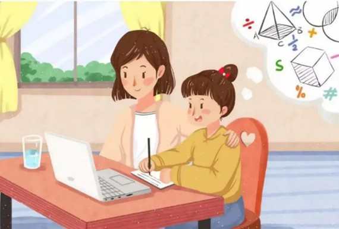
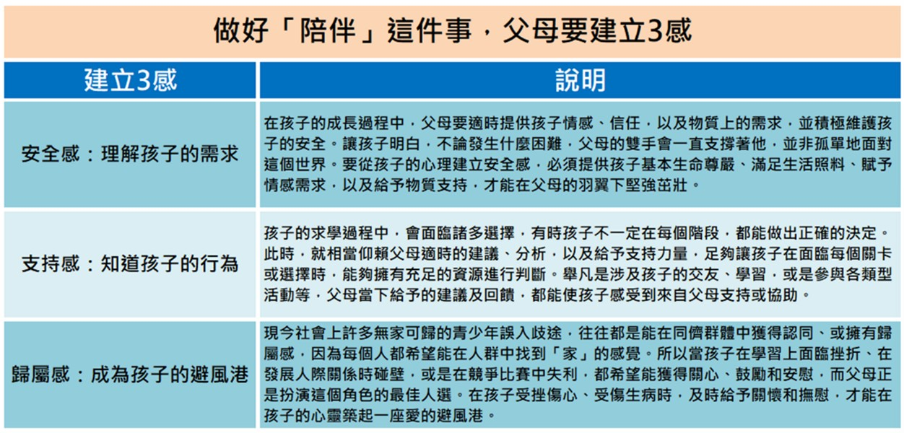
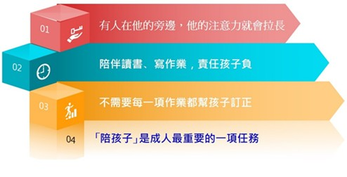

月號－哺乳育嬰站
月號－哺乳育嬰站|
比爾．蓋茲的父親講得好：「孩子行為的好壞不在於管教的鬆或嚴，而是你有沒有參與他的生活（being there）。」 |
|  |
一步一腳印，大腦更是如此 我們的大腦是凡走過必留下痕跡。加拿大的神經學家米尼（Michael Meany）從受虐自殺的大腦標本解剖發現，人類童年的受虐也會影響大腦的結構。那些童年受虐者的大腦海馬迴比正常人小五％，他們的情緒中心，甚至小腦神經連接都有不一樣，又使他們自殺念頭比別人高四到五倍。 米尼發現，童年生活的經驗可以深入到DNA的層次，環境可以啟動或關閉基因，使這個基因的功能展現或不展現出來。這個「表現基因學」（epigenetics）的研究解釋了為什麼同卵雙胞胎一個有精神分裂症，一個沒有，也解釋了被分開收養的雙胞胎長大後，不及童年時相像。 |
|
做好「陪伴」這件事，父母要建立3感 「家」是所有孩子成長的起點，也是建立3感（安全感、支持感和歸屬感）的第一場所。擁有父母的陪伴是每個孩子的期望，父母們必須讓孩子充分感受「3感」，將來才不傷感！ |
|  |
|
「陪孩子」是父母最重要的一項任務 孩子只要有人陪伴在身旁，他的注意力就會集中與拉長。如何陪伴孩子呢？可以陪伴他們讀書、寫作業、聊天、遊戲……。但同時也要留意讓孩子養成良好的習慣，各項行為表現應自己負責。例如：有的父母親陪伴孩子讀書或寫作業時，常覺得孩子字寫得不夠工整、漂亮，此時就會忍不住想幫孩子擦掉作業，重新讓孩子寫一遍。其實這個時候父母親最好的作法是提醒、告訴孩子，他哪裡做得不夠好，可以再改善，之後就是孩子自己要去做調整、自己去努力了。 |
|  |
|
親密的家庭氣氛最有利孩子的發展與學習 為人父母者，一旦願意花時間陪伴孩子，則家庭的氣氛將比較容易營造成和諧、親密與融洽的狀態。我們常說「家」是孩子最大的依靠，因此「家」能為孩子帶來穩定的力量，甚至因為家庭的親密關係與和諧氣氛，提供了孩子優異學習表現的基礎，對孩子的學習表現也有正向的促進作用。 |
|
親師合作共創雙贏 孩子在學校的時間長於在家裡的時間（扣除睡覺時間），與老師互動的時間比與父母相處的時間還久。父母親一定要與學校的師長保持密切的聯繫，維持良好的互動。若父母對於孩子在校中的任何學習、活動或是相關教育措施，有任何不清楚之處，一定要與老師討論、溝通，否則一旦親師之間有了誤解進而產生心結，將對孩子的學習與生活產生不利的影響。 當孩子對老師越信服，則老師的教學與其他對學生的規範與要求，孩子就會越遵守，此時親師合作最大的受益者將是孩子與家長。 |
|
陪伴孩子一起閱讀成長 閱讀是一切學習的基礎，對孩子未來的學習發展也會有非常大的影響。在養成孩子閱讀習慣之時，也要讓孩子有機會親近書，當孩子小的時候，可以用朗讀的方式。以繪本跟文字較少的書為原則，但隨著孩子年齡增長，則要漸漸改為字數稍多的書本。 |
|
我是一位成功的父母 要成為成功的父母，就必須要有「改變自己」的認知，必須具有樂於改變自己的心態。此外，我們應該教孩子能夠自制與自律，我們可以與孩子有所約定，讓孩子在日常生活中養成各種的好習慣，舉凡食衣住行等等，凡孩子可以自己完成的事情，就讓孩子自己去做，也要讓孩子知道規範必須遵守，但父母親千萬不要期待孩子教了一次就會，效果就會出現，我們必須時常提醒孩子，孩子才能漸漸的養成習慣，並達到自制與自律。另外，父母親應該要心口如一，說到做到，當父母親能夠心口如一、說到做到，就會成為孩子最佳的楷模。父母親在陪伴孩子的同時，也應該去發掘並欣賞孩子的小小優點，一旦能夠欣賞孩子的優點，就會成為快樂的父母親，成就快樂幸福的家庭。 |
|
資料來源
1.
孩子行為好壞不在於管教的鬆或嚴，而是你有沒有參與他的生活。洪蘭：「父母的愛與陪伴，才是孩子最需要的」-未來親子 |